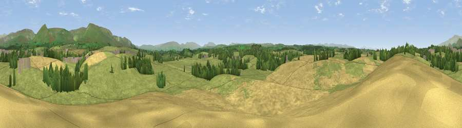

Viewpoint near Great Ormside
#15776 in England · top 54% of its area beats it · near Great OrmsideWhere it is
The exact computed spot (NY 70225 18475). Click the marker for map links.
The view, rendered

A 360° render of this exact spot computed from the terrain model, tree cover and land cover — summer colours, afternoon light, calibrated against photographs of famous viewpoints. Real trees, hedges and buildings will differ in detail.
The panorama
Grey silhouette: terrain skyline in each direction (720 bearings, Earth curvature and refraction included). Dashed green: skyline with trees (+15 m) and buildings (+8 m) as obstacles. Blue strip: how far the ground is visible on each bearing.
Where the view opens
Wedge length = distance to the farthest visible ground on that bearing (vegetation-aware). Rings at 10, 25 and 50 km.
What fills the view
70% grassland · 23% cropland · 6% woodland ·
Angular shares of the visible panorama (visual magnitude), not map area. Landscape diversity 0.35 (0–1 Shannon).
Key numbers
More beautiful places nearby
The staircase of upgrades: each row has a higher view potential than everything closer. Driving times are estimates from straight-line distance, calibrated against real road routing — check an actual route before setting out.
| Place | Direction | Drive | Score |
|---|---|---|---|
| Viewpoint near Appleby-in-Westmorland | NW · 1 km | ~4 min | 58.5 |
| Trickle Banks | SE · 3 km | ~8 min | 61.4 |
| Viewpoint near Hilton | ENE · 5 km | ~12 min | 75.2 |
| Viewpoint c10485_7606 | ENE · 12 km | ~22 min | 75.6 |
| Mickle Fell | ENE · 12 km | ~22 min | 75.8 |
| Great Dun Fell | N · 14 km | ~25 min | 77.8 |
| Little Dun Fell | N · 15 km | ~26 min | 78.4 |
| Cross Fell | N · 16 km | ~28 min | 78.7 |
54.56063, -2.46195 · source: screening · position refined by local search. Computed location — check access rights before visiting.